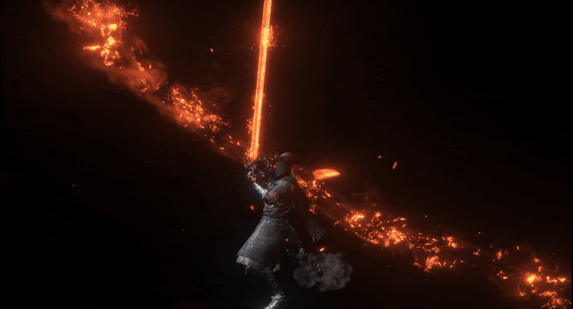
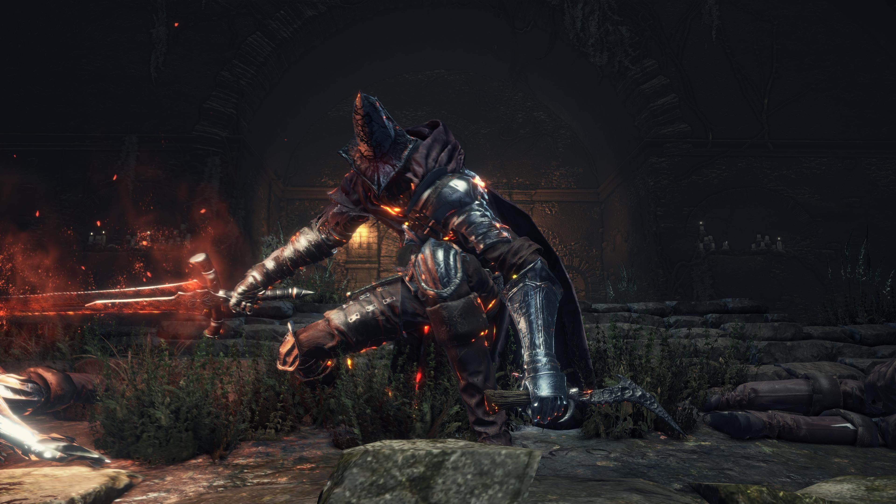
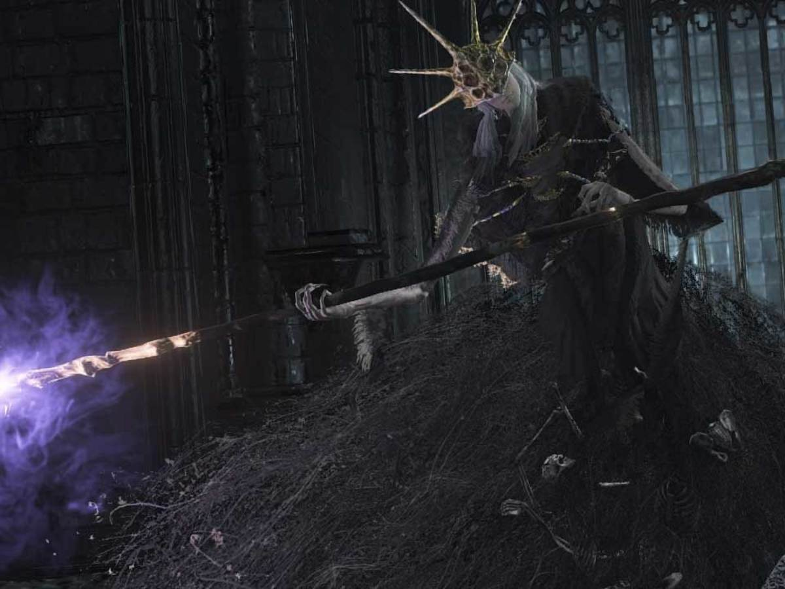
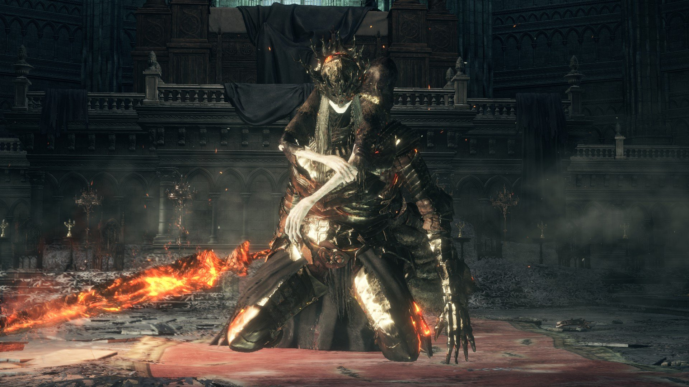
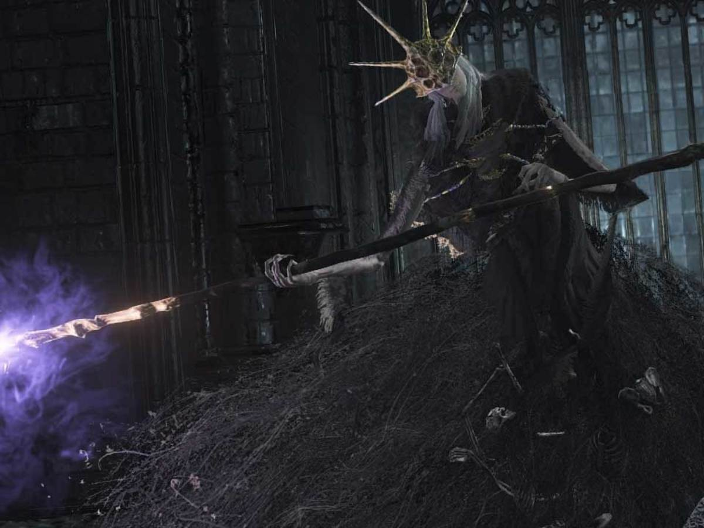
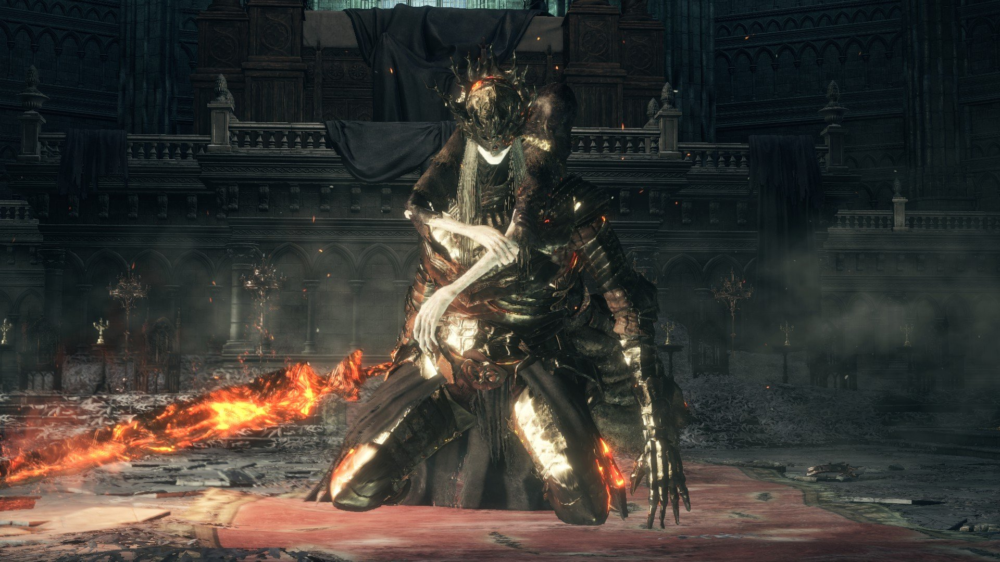

It is a third-person game.Players can use many different type of weapens at the same time,include bows, throwable projectiles, and swords.Shield can deflect enemy's attack and protect the player from suffering damage.Bonfiresbeing a checkpoint is back.Ashen one play an important role in the game.Magic attack cost Focus Points,needs"Ash Estus Flask"to regenerate.Another one is to regenerate health called"Estus Flask".
Fighting and moving in the game become faster and more fluency.Several player movements are performed more rapidly, allowing more damage to be done in a shorter period.Every enemies have different actions,some can change during the fight.There is a new feature calledWeapon Arts:every weapens and shields can consume FP to use unique ability.The game has less map,but maps are larger and more meticulous than before.
Set in the Kingdom of Lothric, a bell has rung to signal that the First Flame, responsible for maintaining the Age of Fire, is dying out. As has happened many times before, the coming of the Age of Dark produces the undead: cursed beings that rise after death. The Age of Fire can be prolonged with the linking of the fire, a ritual in which great lords and heroes sacrifice their souls to rekindle the First Flame.However, Prince Lothric, the chosen linker for this age,abandoned his duty,letting the four Lord of Cinder,who succeed link the fire,awake.But exceptLudleth of Courland,others have their reason to give up linking the fire.Because Ludleth of Courland do not have enough power to link the fire,the undead that failed to link the fire,Ashen One,before is awaken to become the container of Lord of Cinder's power to link the fire.
The main character, Ashen One, awake in a graveyard,reach to a place with thrones,Firelink Shrine,The Fire Keeper let protect the shrine
say :"To keep the Dark Age from coming,we need to defeat the three Lord of Cinders and Prince Lothric and bring their cinders back to the thorns".The lords include the Abyss Watchers, a legion of warriors, sworn by the Old Wolf's Blood which linked their souls into one, to protect the land from the Abyss, and were ultimately locked in an endless battle between each other; Yhorm the Giant, who was once a conqueror of the very people for whom he then sacrificed his life; and Aldrich, who became a Lord of Cinder despite his ravenous appetite for both men and gods.Lothric himself was raised to link the First Flame, but rejected his destiny and chose to watch the fire fade.

 



The dark story, the beutiful background, the boss fight are the reasons I bought the games."Your died"often pop on my screen, sometimes I feel tired to try, but I always found the enthusiasm to play.The accomplishment from defeating the boss really give me a lot of happiness.Now,I am stuck in the one of the hardest boss fight in the game,maybe I can pass for trying about 50 times.